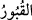
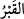

onun zâhiri âtıl; bâtını da bâtıldır. Bazı âlimler der ki bu, âlimlere ve câhillere
temsildir. Cahilleri ölülere benzetmek yaygın bir durumdur. Şâir der ki:
Câhillerin yeni ve güzel elbisesine şaşma!
Çünkü cahil ölüdür. Onun elbisesi kefendir.
Çünkü muteber olan hayat, ruhların ve kalplerin hayatıdır. Bu da hikmet ve mârifetle
olur. Ruhsuz cesedlerin hayatına îtibar edilmez. Zira bu hayata hayvanlar da ortaktır.
Bazı büyükler der ki: Gerçek diriler fenâ-i tâm ile fenâ fillah, bakâ billah
makamlarını elde ederek gerçek hayata vâsıl olanlardır. Bunlar zorunlu ölümden önce
nefis tezkiye ve terbiyesi ve nefis muhasebesiyle ölmeden evvel ölenlerdir. Bunların
ölümlerinin mânâsı, Hak Teâlâ’nın fiillerinin, sıfatlarının ve zâtının yanında kendi
fiillerini, sıfatlarını ve zatlarını yok etmeleri; tabiî ve nefsî olan bütün varlıklarını
tamamen ortadan kaldırmalarıdır.
Peygamber (s.a.) “Kim bir ölüye bakmak isterse Ebû Bekr’e baksın”[73] sözüyle
buna işâret etmiştir. Mânevî hayata yokluk sirâyet etmez. Sûrî, zâhirî, maddî ve cismânî
hayat böyle değildir. Çünkü bu hayat ölümle zâil olur. Ne mutlu böyle bâkî ve ebedî
hayat sâhiplerine ve ne mutlu onlarla beraber olup onlardan ilim ve feyiz alanlara!
İbrahim el-Hirevî der ki, Bâyezid-i Bistâmî’nin meclisinde bulunuyordum. Orada
bulunanlardan bazıları “falanca kişi falancadan ilim aldı” dedi. Bâyezîd “miskinler,
âcizler ve zavallılar ölülerden ilim almışlar. Biz ise ilmi hiç ölmeyen diri olan
Allah’tan aldık” dedi. İşte bu ilim, talep ve tekellüf olmadan ilham yoluyla elde edilen
ledün ilmidir.
Şeyh Sâdi der ki:
İnsan sadece etten ve kemikten ibaret olmaz.
Fakat her şeklin içinde mânâ denilen ruh yoktur.
Nitekim sultan her köleyi satın almaz,
Her eski püskünün altında diri bir gönül bulunmaz.
“Şüphesiz Allah,” kalpleri dirilterek, anlayıp öğüt almak üzere “dilediğine” kelâmını
“işittirir.” O kimse senin uyarından faydalanır. “Sen kabirlerdekilere işittiremezsin!”
“__WORD__ ismi, “__WORD__ kelimesinin çoğuludur. Kabir, ölünün karargâhıdır. Bu söz istiâre-i
muraşşahadır. Allah Teâlâ burada küfür ve inkârda ısrar edenleri ölülere benzetmiştir.
Aynı zamanda Peygamberimiz’in (s.a.) onların îman etmesinden ümidini tamamen
kesmiş olmasını ifâde eder. İstiâre-i muraşşaha, istiârenin müsteâr-ı minh’le mülâyim
olan şeyin beraber olmasıdır. Icâbet etmeye muktedir olamamaları konusunda Allah
Teâlâ kalpleri mühürlenmiş olanları ölülere benzetmiştir. Kabirdekiler işitmeyip icâbet
edemedikleri gibi kâfirler de işitmez ve hakkı kabul etmezler.